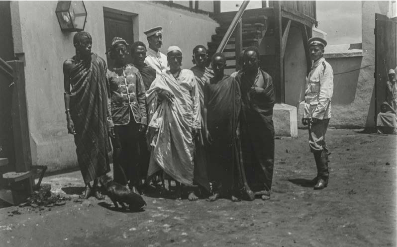

Kielelezo namba 8: Mangi wakiwa katika boma la Wajerumani
Zoezi namba 1
Swali la kwanza. Eleza mambo uliyojifunza kutokana na mfumo wa uongozi wa Kifalme, Kitemi na Mangi.
Swali la pili. Taja sababu zilizosababisha Wafalme, Mangi na Watemi kuwa na nguvu kubwa katika jamii walizozitawala.
Umwinyi Pwani ya Afrika Mashariki
Utawala wa Umwinyi ulishamiri sehemu za Pwani hasa katika maeneo ya Kilwa, Mafia na Bagamoyo.
Pia, ulikuwepo maeneo ya Unguja na Pemba kwa upande wa Zanzibar.
Watawala hawa walijulikana kwa majina tofauti kufuatana na sehemu walizozitawala.
Watawala walioishi sehemu za kati, Magharibi na Kusini ya Unguja walijulikana kama Mwinyi Mkuu ikiwa na maana ya mkuu wa eneo.
Watumbatu waliwaita Sheha na Pemba waliitwa Madiwani au Wajumbe.
130